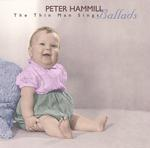

| Artist: | Peter Hammill |
| Title: | The Thin Man Sings Ballads |
| Label: | Fie! FIE 9126 |
| Length(s): | 52 minutes |
| Year(s) of release: | 2002 |
| Month of review: | [06/2002] |
| 1) | Phosphorence | |
| 2) | Don't Tell Me | 4.24 |
| 3) | I Will Find You | 4.06 |
| 4) | Tenderness | 3.31 |
| 5) | Astart | 4.10 |
| 6) | A Better Time | 5.21 |
| 7) | His Best Girl | 4.50 |
| 8) | Touch And Go | 4.05 |
| 9) | Wendy & The Lost Boy | 3.27 |
| 10) | Just Good Friends | 4.17 |
| 11) | Since The Kids | 5.19 |
| 12) | Your Tall Ship | 4.59 |
Don't Tell Me has a bit of the later Balkan influences in his music, felt here in the intro. One can hear quite clearly with headphones that the recording quality of this song is not as good as the first one,. with some hiss along the way. However, the song itself is a much more pleasing one than the previous one. A really somber love song with dark piano runs and his voice doubled, but much lower than on the previous one and some terrific lone trumpet near the end.
Contrary to this, I Will Find You is one of the weakest songs of later Hammill, at least on his Fireships. One might wonder why Curtains and Gaia, both much better tracks are certainly of the kind here collected, are not present. Maybe I Will Find You is one of the more up-beat tracks on this album with a strong guitar presence, a bobbing bass and some string synths. The song is rather straightforward for Hammill. The ending is even a bit more upbeat with some organ and rather active vocals.
Tenderness is what you might expect from the title: a rather smooth lullabyish track with slow percussion and in all a bit plaintive. However, the song also contains some soundscapes (in Arabic style) making the song a bit less "easy" then it seems at first. The mellow line is continued with the low sounds of Astart and orchestral strings (synths I would think) as well. Not bad, but for my tastes, a bit too melodramatic. Very much a ballad though.
The music starts to dance a bit more on A Better Time, on which the violin of Stuart Gordon plays quite a large role. Again, the chamber orchestra is not far off.
To me, the best "quiet" album Hammill made was Fireships. From this album we also get one of the best tracks, His Best Girl. A tragic, slow piece on women being dumped by their rich husbands for younger girls. The melodies are wonderful. Goosebumps.
On Touch And Go, we come back to None Of The Above (and not Everyone You Hold as written in the booklet), but which would have fit well on Everyone You Hold, mind you: romantic, with soundscapish effects on guitar.
Wendy & The Lost Boy is a waltzy piece with a strong role for lightly melodic tuneful piano and a memorable vocal melody. The middle part of the track is very good: dark cello lines and more enegetic vocals. The song has grown in my liking, although it is still maybe a bit too romantic.
Just Good Friends is another great track from the eighties. After all these years, the song sounds so familiar. Again, being an eighties track, a bit of noise can be heard on this recording and the drums sound flat. But the vocal melody is great, although a bit more expression....(am I saying this?), there is a certain stiffness to it. But of course, that may have been the intention: later his vocals hold just that hint of sadness.
And what can I say about Since The Kids? The album which contains it, This, is still one of the best albums to come of Hammill's pen the last ten years and of that album Since The Kids is one of my favourite songs. The combination of the moodiness to the music, the strong vocal melody and the lyrics, that I can very much relate to make for a great song.
Your Tall Ship is from what people often called his return to progressive rock: Roaring Forties. This slow moving somber ballad with plenty of warm organ fits in well. At the end, the pace goes up a bit with percussion and bass going for it in a big way.